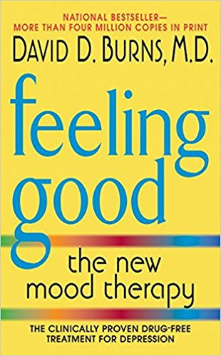

Author : David D. Burns
Genre : Self-help
Best price : €7,99
Buy at: Amazon

Feeling Good: The New Mood Therapy By David D. Burns
The good news is that anxiety, guilt, pessimism, procrastination, low self-esteem, and other "black holes" of depression can be cured without drugs. In Feeling Good, eminent psychiatrist, David D. Burns, M.D., outlines the remarkable, scientifically proven techniques that will immediately lift your spirits and help you develop a positive outlook on life. Now, in this updated edition, Dr. Burns adds an All-New Consumer′s Guide To Anti-depressant Drugs as well as a new introduction to help answer your questions about the many options available for treating depression:
- Recognise what causes your mood swings
- Nip negative feelings in the bud
- Deal with guilt
- Handle hostility and criticism
- Overcome addiction to love and approval
- Build self-esteem
- Feel good everyday
Specifications:
Publisher: HarperCollins Publishers Inc
ISBN: 9780062457714
Number of pages: 224
Weight: 318 g
Dimensions: 210 x 140 x 21 mm
>>Reviews
Many years ago I had a confluence of tragic events in my life and I decided to see a psychologist for a while. One day the psychologist told me that I needed to "deal with my feelings". I told him in frustration that I heard that many times before, but that I did not understand what that meant. I asked him what exactly do people do when they "deal with their feelings". He was silent for a few moments and then he wrote the name of this book down on a slip of paper. This book will tell you how to "deal with your feelings".
You may get an instant change in your feelings on some small issues, but for the most part cognitive therapy is like jogging to lose weight. You have to do it consistently and for a while to get significant results. No magic, you have to work, but you will get good results.
One of the symptoms of depression is not seeing things as they are. Since cognitive therapy works on learning to see things as how they are a person with severe depression might benefit from seeing a psychologist who specializes in cognitive therapy. Such a therapist can help a person see around their blind spots whereas a book can not.
Buy now

$8.90
* This price contains free delievery